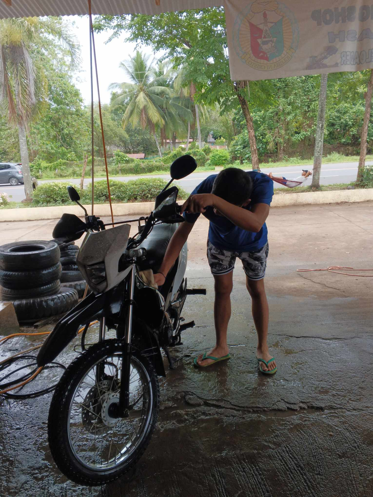
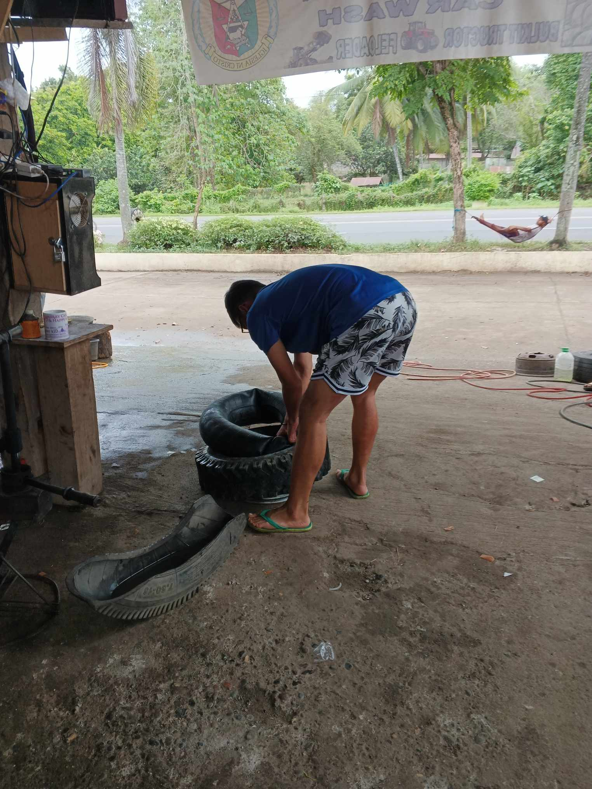

As a Car Wash Technician, I have honed my skills in the art of vehicle detailing. It's not merely
about spraying water and scrubbing surfaces; it's about understanding the nuances of different car
surfaces, selecting the right cleaning agents, and employing techniques that ensure a spotless and
pristine finish. I take pride in transforming vehicles from dusty and dull to sparkling and
showroom-ready, providing customers with a visual testament to my dedication to excellence.

Tires are the unsung heroes of any vehicle, and my role as a Tire Technician involves more than
just changing them. I have become adept at assessing tire conditions, identifying wear patterns,
and recommending appropriate solutions to ensure optimal performance and safety. From tire
rotations to balancing, I understand the crucial role tires play in the overall well-being of a
vehicle, and my expertise lies in ensuring that each tire is not just a component but a vital part
of a smooth and safe driving experience.